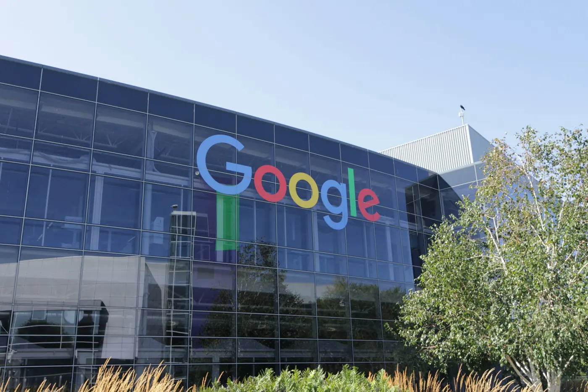

Comment suivre sa visibilité dans les aperçus IA de Google

Pendant des années, se placer sur Google voulait dire viser les premiers résultats naturels (SEO) ou acheter une annonce Google Ads (SEA).
Depuis l’arrivée des aperçus IA, une nouvelle position s’affiche en haut de la page de résultats, parfois même au-dessus des annonces. Elle répond directement à la requête de l’utilisateur et fait descendre les autres résultats.
Votre site peut apparaître parmi les premières sources citées dans l’aperçu IA, plus bas dans la liste des sources ou ne pas y figurer du tout.
Cette place influence directement le nombre de clics, et les premières données françaises montrent déjà une baisse du taux de clic sur les requêtes concernées.
Pour savoir où se situe votre site, il faut suivre cette position, que les outils de suivi classiques ne mesurent pas. Une méthode existe, avec ses étapes, ses indicateurs et ses outils, pour mesurer votre présence et repérer les leviers qui augmentent vos chances d’être cité.
L'arrivée des Aperçus IA en France
Google a lancé les aperçus IA et le Mode IA en France, après un déploiement mondial commencé en mai 2024. La date de lancement français est le 22 juillet 2026. Ce retard s’explique en grande partie par les obligations de Google au titre des droits voisins. Google s’est engagé auprès d’environ 450 éditeurs à proposer un droit de retrait sans effet sur le référencement classique et une transparence sur les impressions générées par l’IA.
Ce retard limite l’historique des sites français à quelques mois de données. Les États-Unis affichent les Aperçus IA depuis mai 2024, soit près de deux ans et demi de recul. Les études menées sur le marché américain donnent donc une idée de l’évolution probable du trafic en France.
Ce que les études mesurent sur le taux de clic
D’après Ahrefs, un aperçu IA réduisait le taux de clic de la première position d’environ 58% en décembre 2025. La deuxième position perd environ la moitié de ses clics et la dixième recule de près de 20%. En France, les premiers effets sont visibles. Les sites les plus exposés ont perdu plus d’un cinquième de leur taux de clic en neuf jours. Ahrefs observe environ un point de taux de clic perdu pour chaque point d’exposition supplémentaire aux aperçus IA. La santé affiche le taux d’Aperçus IA le plus élevé de l’étude, à 22,2%, avec un taux de clic en baisse de 20,4%.
Pew Research a mesuré le comportement réel des internautes américains. Le taux de clic sur un résultat classique passe de 15% des visites sans résumé à 8% avec un résumé IA. Le lien placé dans le résumé reçoit un clic dans 1% des visites. Selon SparkToro, 68,01% des recherches Google aux États-Unis se sont terminées sans clic entre janvier et avril 2026. La citation change le résultat.
Seer Interactive a suivi 53 marques sur 5,47 millions de requêtes. Une marque citée dans l’aperçu IA obtient 120% de clics organiques en plus par impression qu’une marque non citée. Les auteurs y voient une corrélation, car les marques à forte autorité sont aussi les plus souvent citées.
Le suivi répond à deux questions. La requête déclenche-t-elle un aperçu IA ? Votre site y est-il cité ?
Ce que Search Console affiche aujourd'hui
Google a présenté le 3 juin 2026 un rapport consacré à l’IA générative dans Search Console. Il est disponible pour tous les sites depuis le 31 août 2026. Il remonte les impressions des Aperçus IA et du Mode IA, regroupées, par page, pays, appareil et date. Il n’affiche ni les clics ni les requêtes concernées. Selon la documentation de Google, les clics issus des fonctionnalités d’IA sont comptés dans le rapport de performances habituel, avec le type de recherche Web, sans distinction avec les résultats classiques. Bing Webmaster Tools propose un rapport équivalent en préversion publique depuis février 2026.
Ce rapport sert à repérer les pages qui apparaissent dans les surfaces IA. Il n’indique pas si la page reçoit un lien, ni sur quelle requête. Un relevé des pages de résultats reste nécessaire pour ces informations.
5 étapes pour établir un relevé de départ
- Définir la liste de requêtes : Retenez les requêtes informationnelles et les questions liées à votre activité. Commencez par celles où vous êtes en première page. Traitez les requêtes transactionnelles plus tard, car elles déclenchent moins d’Aperçus IA.
- Relever l’état initial : Pour chaque requête, notez trois informations. Un Aperçu IA s’affiche-t-il ? Votre domaine est-il cité ? Quels concurrents sont cités ?
- Fixer la fréquence : Un relevé hebdomadaire convient pour démarrer. Passez au relevé quotidien pour les requêtes prioritaires et pendant les mises à jour de Google.
- Séparer citations et mentions : Une citation contient un lien vers votre page. Une mention nomme votre marque dans le texte sans lien. Notez-les dans deux colonnes distinctes.
- Analyser chaque mois : Regroupez les relevés hebdomadaires. Repérez les requêtes sans citation, les concurrents en progression et les formats souvent cités. Ces constats orientent vos mises à jour de contenus.
Un aperçu IA varie d’une session à l’autre. Testez chaque requête sur trois ou quatre sessions avant de conclure. Notez la date de chaque relevé et les mises à jour connues de Google. Une baisse d’une semaine suivie d’un retour relève de la volatilité. Une baisse sur quatre semaines demande une analyse.
Pour déclencher un aperçu IA à la main, formulez une question complète. Les questions en comment et pourquoi en déclenchent davantage que les requêtes courtes.
Classer les requêtes par niveau de priorité
- Niveau 1 : Requêtes informationnelles à fort volume où vous êtes en première page.
- Niveau 2 : Requêtes à volume moyen liées aux contenus que vous publiez ou mettez à jour.
- Niveau 3 : Sujets émergents à surveiller. Un relevé dès maintenant permet de réagir si les aperçus IA s’y multiplient.
Les indicateurs à suivre
- Taux de déclenchement. Part des requêtes suivies qui affichent un Aperçu IA. Son évolution montre si Google en affiche davantage dans votre secteur.
- Fréquence de mention. Nombre d’Aperçus IA qui nomment votre marque, avec ou sans lien.
- Taux de citation. Part des requêtes suivies où votre domaine reçoit un lien. Beaucoup de mentions et peu de citations signalent souvent un contenu reformulé sans lien vers la source. Vérifiez page par page.
- Répartition des pages citées. Liste des pages qui reçoivent des citations. Si une ou deux pages concentrent l’essentiel, le risque de dépendance augmente. Analysez leur structure pour l’appliquer à d’autres pages.
- Indicateurs indirects. Aucun outil ne relie une citation à un chiffre d’affaires. Suivez le taux de clic des pages citées, le volume de recherches sur votre marque et le trafic de référence. Des impressions stables avec des clics en baisse correspondent souvent à l’effet d’un Aperçu IA. Ces signaux indiquent une tendance sans établir de lien de cause.
- La mesure reste la principale difficulté des équipes. Dans l’enquête HubSpot 2026 menée auprès de plus de 4 000 marketeurs, elle est le premier obstacle cité par les équipes B2B, à 23%. Le même rapport reprend une donnée Similarweb de septembre 2025 sur l’e-commerce mondial. Les visites issues d’outils d’IA convertissent à 11,4% et celles de la recherche organique à 5,3%.
Fixer le rythme de suivi et les seuils d'alerte
- Relevé quotidien pour les requêtes de niveau 1.
- Relevé hebdomadaire pour le niveau 2.
- Relevé mensuel pour le niveau 3 et l’analyse concurrentielle.
- Définissez des seuils qui déclenchent une analyse. Par exemple, une baisse du taux de citation de 10% ou plus en une semaine sur le niveau 1. Un concurrent qui apparaît sur trois requêtes prioritaires ou plus. Une citation perdue sur une requête stable pendant deux relevés de suite. Élargissez ces seuils dans un secteur volatil.
Attribuez trois rôles. Le relevé des données, l’examen des alertes et la synthèse mensuelle. Une seule personne peut les assurer dans une petite équipe.
Mesurer l'écart avec les concurrents
Une première position ne garantit pas la citation. Un concurrent classé plus bas peut être cité plus souvent sur vos requêtes communes.
Constituez un échantillon fixe de 20 à 50 requêtes informationnelles qui déclenchent régulièrement un aperçu IA. Utilisez le même outil et le même rythme à chaque analyse. Comparez cinq éléments.
- Couverture : Part de l’échantillon où chaque domaine apparaît.
- Part de mention : Ratio de mentions par domaine, pour comparer les périodes entre elles.
- Origine des citations : Articles de blog, pages produit, documentation ou sites tiers.
- Formats cités : Guides, tutoriels, comparatifs, études chiffrées, transcriptions vidéo.
- Requêtes manquées : Requêtes où un concurrent est cité et votre site absent.
Les requêtes manquées sont vos priorités de contenu. Comparez la longueur, la structure, la précision, les données, la date de mise à jour et la clarté de la réponse.
Les contenus les plus souvent cités
Google fixe deux conditions pour apparaître comme lien source. La page doit être indexée et pouvoir s’afficher avec un extrait dans les résultats. Google indique qu’aucune optimisation spécifique n’est nécessaire et que les principes habituels du référencement s’appliquent.
Une page qui répond entièrement à une question précise a plus de chances d’être citée. Les étapes numérotées conviennent aux requêtes pratiques. Les intertitres clairs aident Google à extraire un passage. Les données originales et les définitions exactes apportent une information absente des sources génériques. L’expertise de terrain correspond aux critères de qualité de Google. Les sujets qui évoluent vite demandent des mises à jour régulières.
L’étude HubSpot sur les données Xfunnel de décembre 2025 à mars 2026 apporte des repères. Les articles de blog obtiennent le taux de citation le plus élevé dans les aperçus IA, à 42%. Les pages qui comptent entre 7 et 15 intertitres H2 reçoivent le plus de citations. Les pages bien positionnées sur de nombreuses requêtes Google sont aussi plus souvent citées. Ces résultats décrivent des corrélations.
Les pages rarement citées sont les pages minces, les pages de conversion et les contenus qui ont besoin de leur contexte pour être compris.
Les sources tierces dans les aperçus IA
Google cite aussi des contenus extérieurs aux marques.
Pew relève que Wikipedia, YouTube et Reddit dominent les sources citées.
Le rapport HubSpot place LinkedIn et YouTube en tête des réseaux sociaux cités. Suivez les fils Reddit, les vidéos, les forums spécialisés et les plateformes d’avis comme G2 ou Trustpilot. Notez si le ton envers votre marque est neutre, positif ou négatif.
Participez sur les sujets où vous avez une expertise. Indiquez votre affiliation. Répondez avec précision. N’achetez et ne fabriquez aucun avis.
Les outils de suivi disponibles
- Suivi de positions avec détection des Aperçus IA : Semrush, SE Ranking et Ahrefs couvrent de larges listes de requêtes en quotidien ou hebdomadaire. Le détail des citations reste limité.
- Plateformes de visibilité : BrightEdge et Conductor visent les grands comptes, avec un coût et une mise en place plus lourds.
- Audit des pages de résultats : Moz et Authoritas conviennent à un suivi hebdomadaire ou mensuel.
- Relevé manuel : Un tableur daté par requête montre le détail complet des citations et des mentions. Il demande du temps et ne passe pas à l’échelle.
- Search Console et Bing Webmaster Tools : Les impressions dans les surfaces IA, sans clic ni requête.
Transformer les relevés en hypothèses
Un relevé sert de point de départ à un test. Cinq pistes reviennent souvent.
- Clarté : Placez une réponse directe et courte en haut de la page.
- Preuves : Ajoutez des données propres, des chiffres précis ou une étude originale.
- Entités : Nommez les entités clés de la requête et leur lien avec votre sujet.
- Structure : Reprenez l’organisation des pages citées, avec listes numérotées, définitions ou questions-réponses.
- Diffusion : Renforcez le maillage interne, obtenez des liens externes et intégrez la page à vos actions de promotion.
Aucune modification ne garantit une citation. La composition d’un Aperçu IA change aussi avec les mises à jour de Google. Présentez ces actions comme une amélioration de la qualité et des chances de citation.
Questions fréquentes sur le suivi des aperçus IA
Search Console mesure-t-elle les aperçus IA ?
Search Console affiche les impressions des aperçus IA et du Mode IA depuis l’été 2026. Elle n’affiche ni les clics, ni les requêtes, ni le détail des citations.
À quelle fréquence vérifier sa visibilité ?
Un relevé hebdomadaire suffit pour la plupart des requêtes. Passez au quotidien pour les requêtes prioritaires, après une mise à jour de contenu importante ou pendant une mise à jour de Google.
Comment entrer dans un aperçu IA ?
Il n’existe aucune soumission. Répondez à la requête de façon directe et complète, structurez la page, gardez-la à jour et assurez une exploration technique sans erreur. Les liens et mentions obtenus sur d’autres sites renforcent l’autorité de la page.
Faire le point sur votre visibilité dans les moteurs IA
Chez Rubriqua, nous accompagnons les entreprises qui veulent comprendre comment elles apparaissent dans Google et les assistants IA. Nous commençons toujours par une première analyse : lecture du rapport IA de Search Console, relevé de départ sur vos requêtes prioritaires, audit de vos pages stratégiques et comparaison avec vos concurrents. Vous savez ainsi où vous êtes cité, où vous ne l’êtes pas, et quelles pages retravailler en priorité.
Savez-vous si l'IA cite votre entreprise ?
Nous analysons votre présence dans les Aperçus IA de Google et les autres assistants IA, puis nous identifions les pages à retravailler en priorité pour être retenu dans leurs réponses.
Échanger